aquí venimos a comer bien, sin tonterías
Bistró parisino de verdad en el distrito 4, terraza enorme en el Boulevard Henri IV, equipo joven que se ríe. Mandamos los clásicos franceses desde el café de la mañana hasta la última copa — comida buena, bien hecha, sin postureo. A dos pasos de la Bastilla.
Un bistró parisino vivo, en el corazón del distrito 4
Le Réveil Bastille es el bistró parisino en su forma más pura: mesas que se llenan al amanecer, un equipo joven que conoce a los clientes habituales por su nombre, cocina francesa servida sin parar de la mañana a la noche.
Aquí se viene por un café exprés en el Boulevard Henri IV, y uno se queda a comer. Por una copa de vino en la terraza, y se queda hasta la cena. La carta es honesta — huevo cocotte con foie gras, hamburguesa de salmón ahumado, confit de pato, Paris-Brest casero — cocinada como debe ser, a precios de bistró de toda la vida.
El equipo es joven, el ambiente está siempre vivo, la cocina nunca cierra. Entre la Bastilla y el Marais, este es el sitio al que se vuelve siempre.
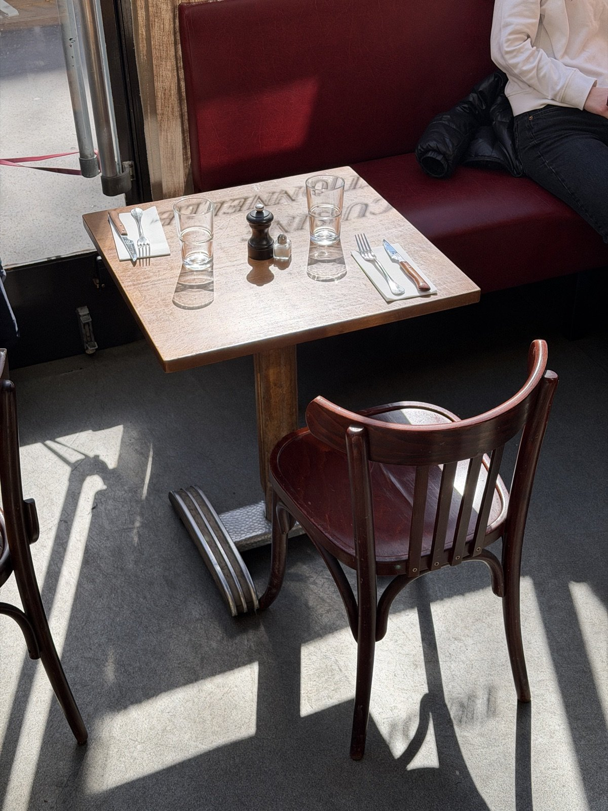
★ 9,4/10 · 685 reseñas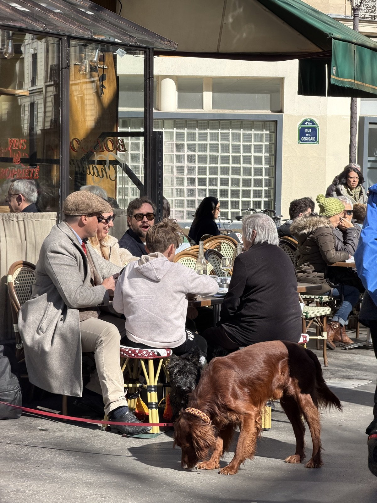
la más grandeUna de las terrazas más grandes del barrio de la Bastilla
Sol toda la mañana, pleno sur al mediodía, dorada al atardecer: nuestra inmensa terraza se extiende a lo largo del Boulevard Henri IV. El mejor sitio para vivir París al aire libre, entre la Bastilla y el Marais.
- Desayuno en el bulevar desde las 7h entre semana
- Comida al sol, a un paso del Puerto del Arsenal
- Aperitivo desde las 18h — y sin hora de cierre real
- Cenas de verano bajo los árboles hasta las 2 de la mañana
- Brunch dominical en la terraza, hasta media tarde
Cocina de bistró francés, de la mañana al último servicio
Tres momentos, una misma exigencia: producto fresco, hecho en casa, precios honestos. La carta cambia con las estaciones, la pizarra cambia con el ánimo del chef.
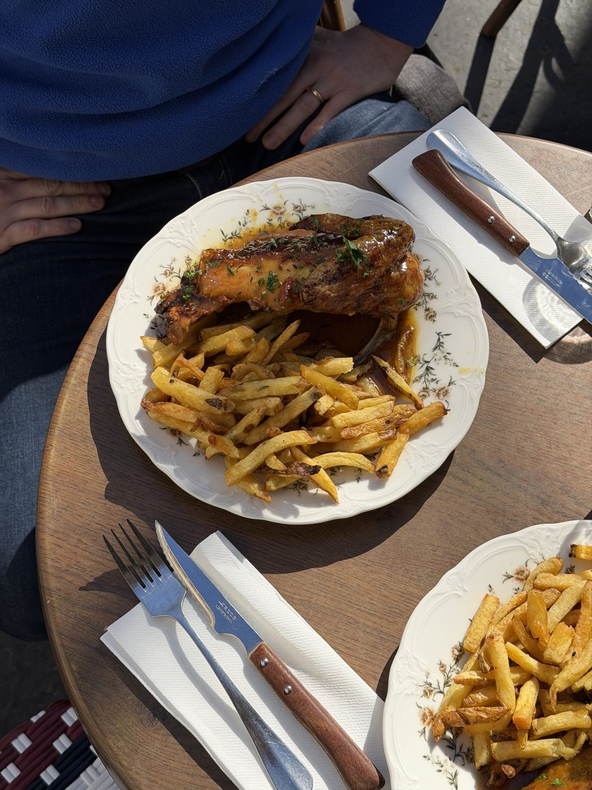
Menú del día
14,90 €Servido entre semana. Entrante + plato o plato + postre, cocina de bistró rápida y bien hecha. La pausa del mediodía que el barrio estaba esperando.
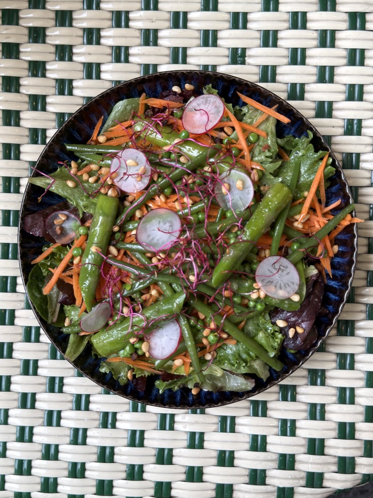
Brunch dominical
22 €Cada domingo: huevos, bollería, tabla salada, zumo natural, café ilimitado. El brunch parisino sin tonterías, en la terraza o apoyado en la gran barra.
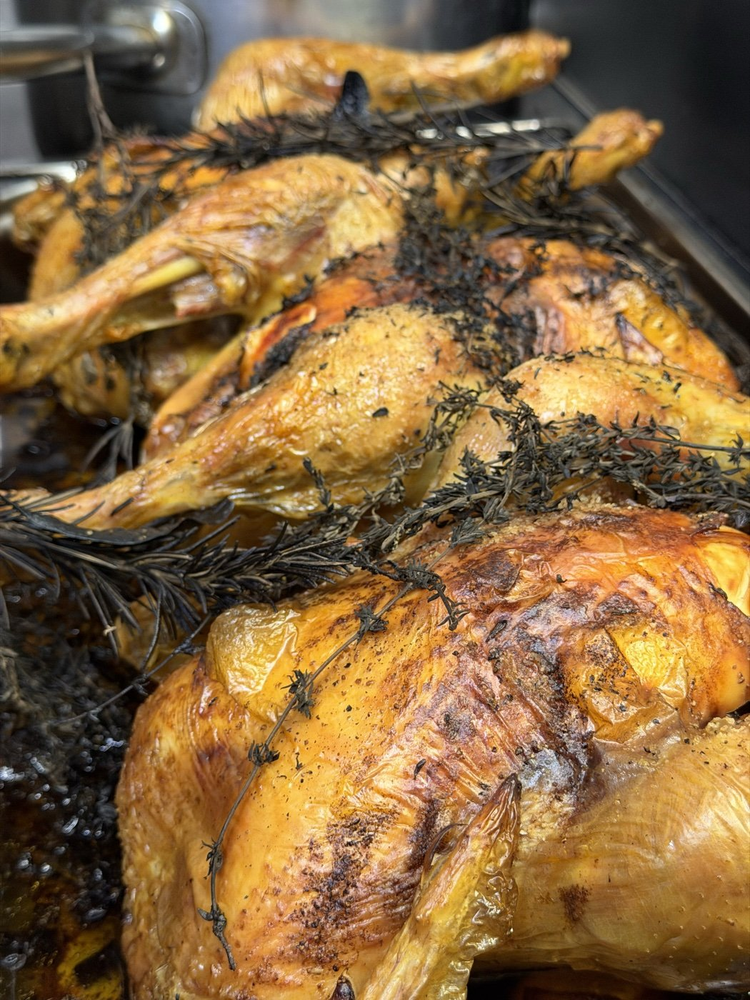
A la carta
20–30 €Huevo cocotte con foie gras, ceviche de dorada, confit de pato, pollo asado a las hierbas, Paris-Brest casero. Servicio continuo, comida y cena.
Para grupos o cualquier consulta sobre los platos del día, llámanos directamente.
En pleno distrito 4, entre la Bastilla y el Marais
Le Réveil Bastille ocupa una de las direcciones más codiciadas del Boulevard Henri IV: frente al Puerto del Arsenal, a 2 minutos de la Plaza de la Bastilla, a 5 minutos del Marais. El barrio ideal para descubrir el París auténtico, y el bistró ideal donde hacer una pausa.
Plaza de la Bastilla
La plaza mítica, su ópera, sus cafés, su historia — todo París comienza aquí.
Puerto del Arsenal
El puerto deportivo secreto de París, justo enfrente del bistró. Luz increíble al atardecer.
El Marais
Galerías, tiendas vintage, palacetes — el barrio más parisino de París está a dos calles.
Ópera Bastilla
Antes o después del espectáculo, somos la parada natural para cenar o tomar algo.
Coulée Verte René-Dumont
El parque elevado original (mucho antes que el High Line de Nueva York), a pocos metros.
Île Saint-Louis
El París de postal, a pocos minutos cruzando el Sena desde el bistró.
Tu evento en Le Réveil
Cumpleaños, cenas de equipo, after-works, comidas familiares — el bistró acoge hasta 100 personas en privatización total y ofrece dos salones privados para grupos más pequeños.
Le Banquet
10 a 15 personas — salón privado íntimo, perfecto para una comida de trabajo o una cena de amigos.Le Jardin d'Hiver
10 a 20 personas — bajo nuestra cristalera, luminoso de día, acogedor de noche.Privatización total
Hasta 100 personas — barra monumental, terraza y sala completa, para las grandes ocasiones.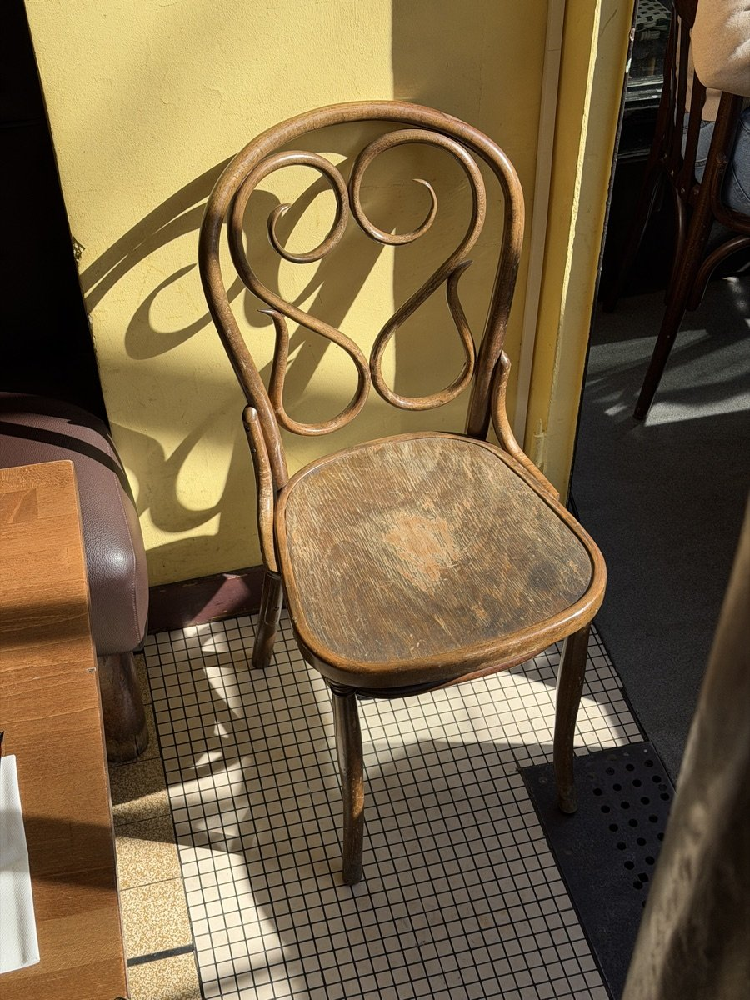
El bistró, de verdad
Sin fotos de stock, sin postureo: así es realmente un martes al mediodía o un sábado por la noche en Le Réveil.
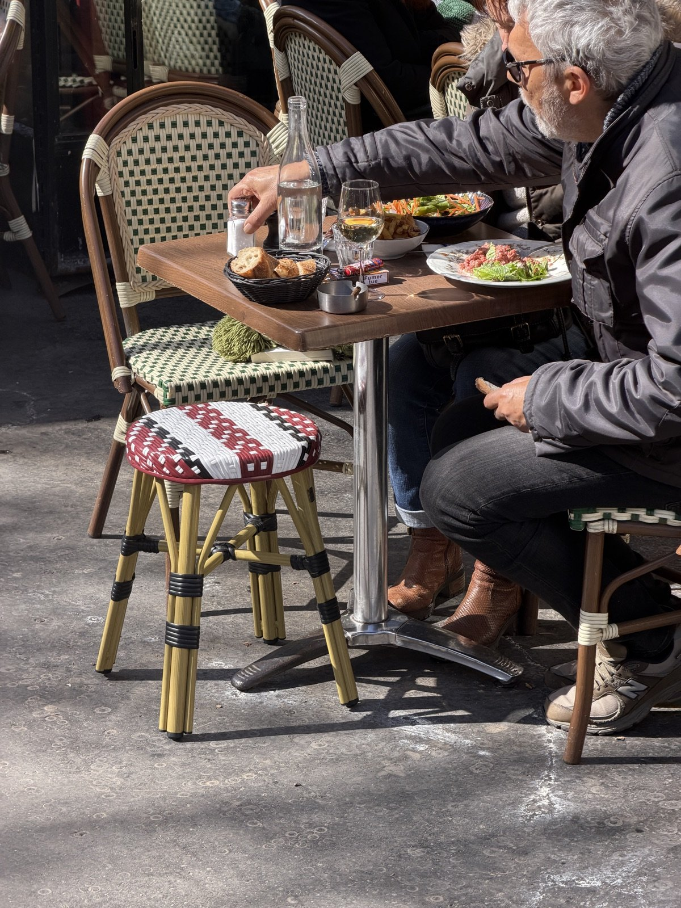
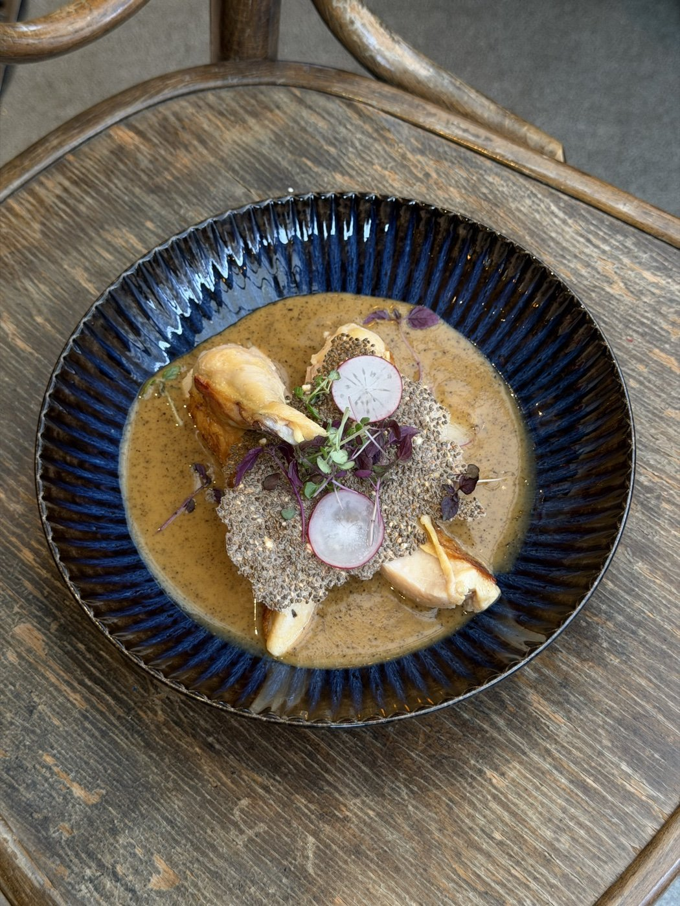
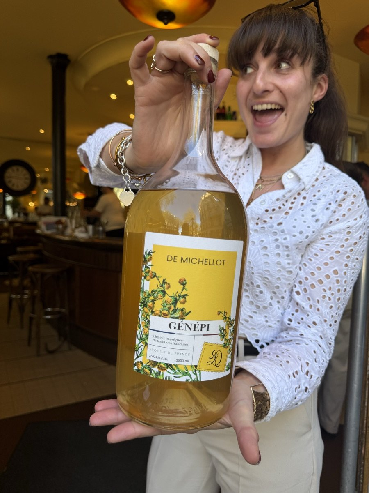
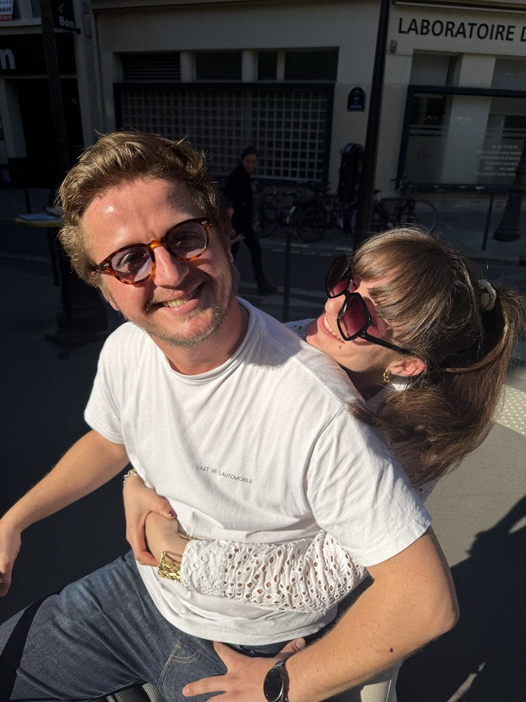
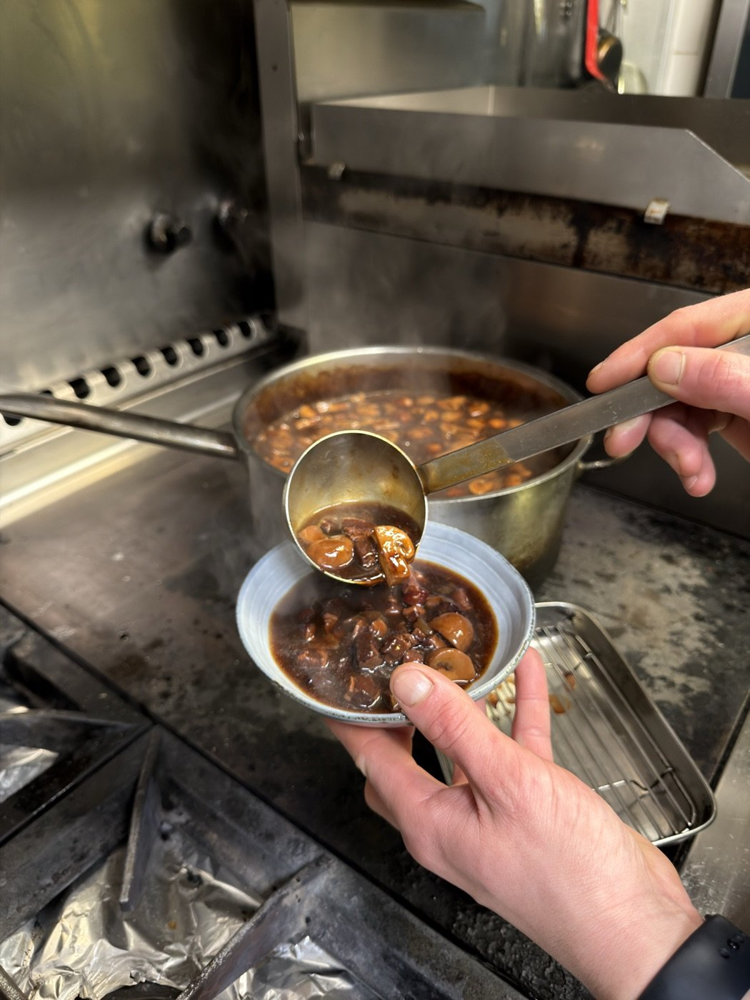
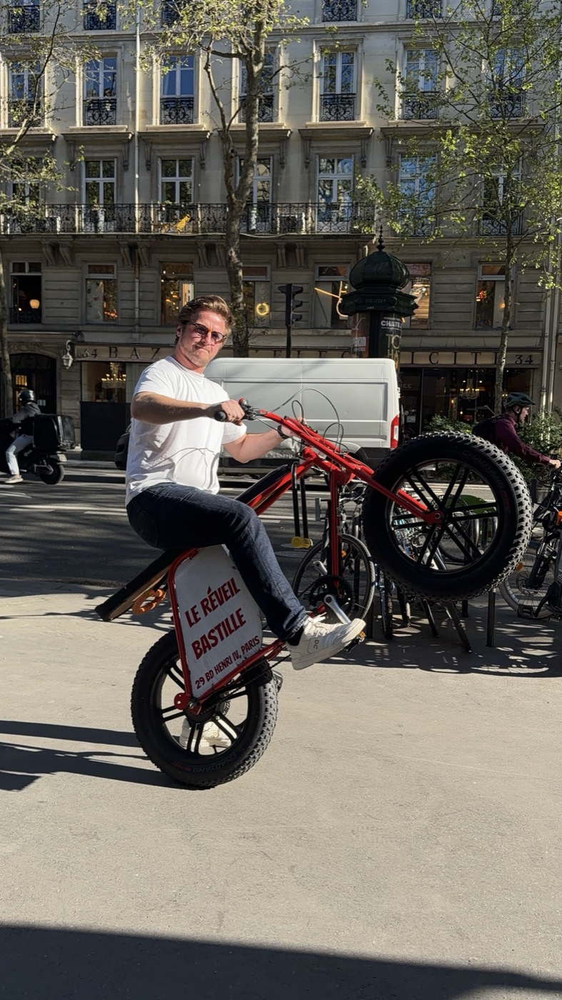
Lo que más nos preguntan
En el 29 Boulevard Henri IV, distrito 4 de París. A 2 minutos a pie de la Plaza de la Bastilla, a un paso del Marais y del Puerto del Arsenal. Metro más cercano: Sully – Morland (línea 7) o Bastille (líneas 1, 5, 8).
De lunes a viernes: 7h – 2h. Sábado: 8h – 2h. Domingo: 8h – 1h. Servicio continuo todo el día — puedes venir a cualquier hora.
Entre 20 y 30 € por persona a la carta. Menú del día a 14,90 €, brunch dominical a 22 €.
No hay reserva en línea — somos un bistró auténtico, ven directamente. Para grupos, cumpleaños o eventos privados, un único número: +33 6 86 06 85 76.
Sí — la terraza del Boulevard Henri IV está abierta todo el año, climatizada en invierno, llena en cuanto sale el sol. Una de las más grandes del barrio.
Sí — Le Banquet (10 a 15 personas), Le Jardin d'Hiver (10 a 20 personas), o privatización total hasta 100 personas. Llámanos al +33 6 86 06 85 76 para un presupuesto a medida.